Tu primer mapa: una sala por la que caminar
De un mapa vacío a una sala que puedes recorrer en el juego: brushes, texturas, caulk, una luz, el inicio del jugador, el optimizador, compilar con la ventana de progreso, recorrerla en el editor, y el .pk3 para el juego.
Cada imagen de esta página se tomó mientras el programa hacía exactamente estos pasos, y el autotest comprueba el resultado cada vez: la sala compila sin fugas, el jugador está en el inicio y puede caminar, y el .pk3 contiene el mapa. Los menús y atajos son los de NetRadiant-Custom, así que otros tutoriales de mapeado también encajan; la página El editor de mapas explica las ventanas.
Pasos#
- 1
Configura el juego. Cambia la barra de modos a Editor de mapas. El editor usa el juego para el que está configurado el programa; sus carpetas vienen de los ajustes del programa. Edit > Preferences, página Juego, muestra el juego; la página Rutas, la ruta del motor (vacía: se toma de las carpetas del juego del programa).
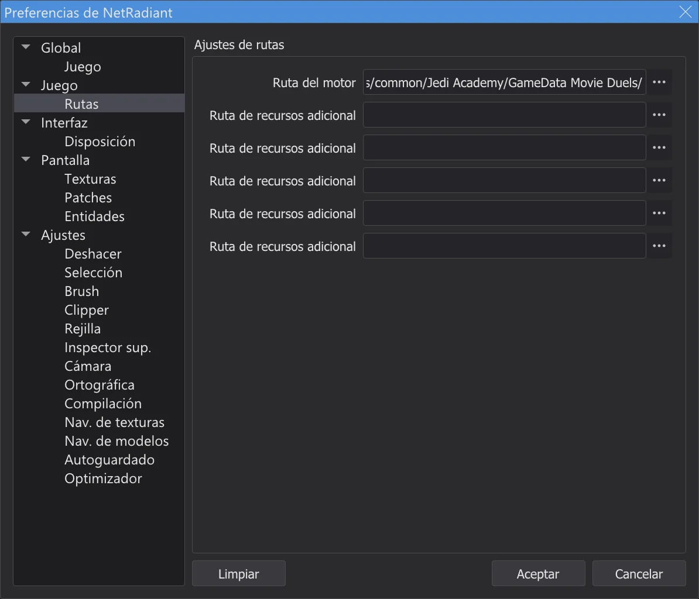
Preferences, página Rutas. - 2
Mapa nuevo. File > New Map empieza un mapa vacío, solo con el worldspawn. Aleja un poco la vista 2D con la rueda del ratón.
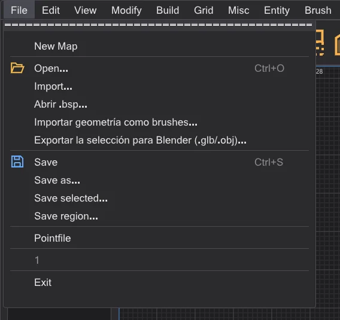
El menú File. - 3
Dibuja un brush. En la vista 2D superior, arrastra con el botón izquierdo de una esquina a la otra; aquí de -256 -256 a 256 256, una caja de 512 unidades de ancho. Su altura viene de la zona de trabajo (al principio de -64 a 64).
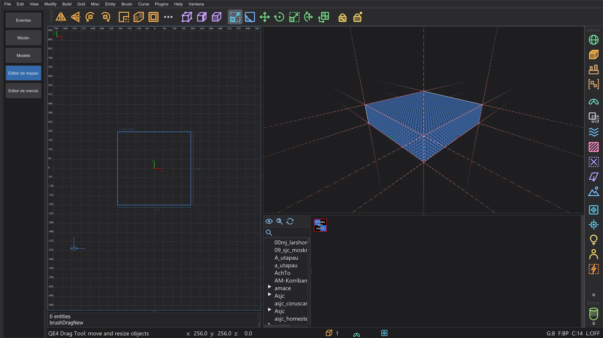
El brush nuevo, seleccionado (en rojo). - 4
Hazlo más alto. Num 1 cambia la vista 2D a la vista frontal (XZ). Agarra justo encima del borde superior y arrastra hacia arriba: la cara superior lo sigue en la rejilla. Aquí hasta 192: la sala mide ahora 256 de alto. Num 7 vuelve a la vista superior.
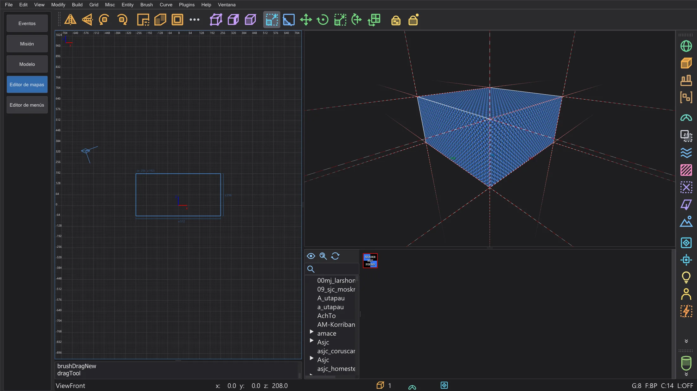
La vista frontal: el brush mide ahora 256 de alto. - 5
Textura. Haz doble clic en una carpeta del árbol del navegador de texturas y pulsa una textura con el botón izquierdo: cada cara del brush seleccionado la recibe. Elige algo sin transparencia para las paredes.
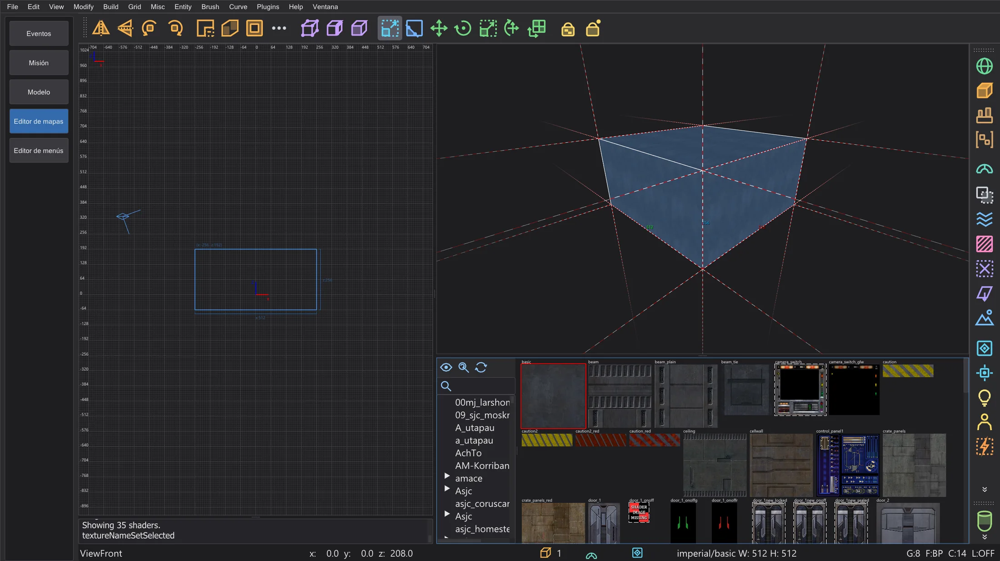
La textura de pared en las seis caras. - 6
Vacíalo. El botón Herramienta CSG de la barra abre la herramienta CSG. Deja el grosor en 16 y desactiva por ahora el botón de caulk (AutoCaulk lo hará después), y pulsa Hueco::tirar de las caras: seis paredes de 16 de grosor crecen hacia fuera alrededor de la sala, y el interior queda exactamente como la caja que dibujaste. El botón Room (Make Room) de la barra hace lo mismo con el tamaño de rejilla como grosor.
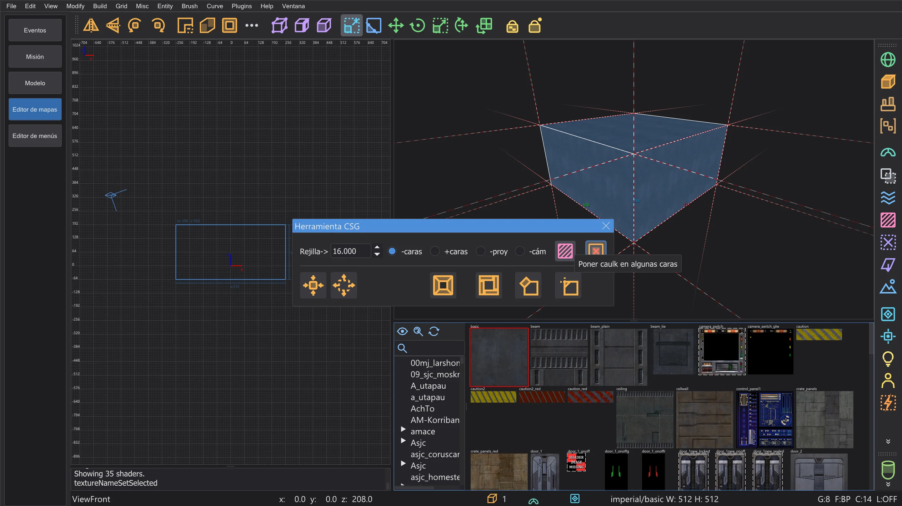
Herramienta CSG con el botón de caulk desactivado. - 7
Una textura de suelo. En la vista frontal, Mayús + clic izquierdo en el suelo selecciona solo el brush del suelo; pulsa una textura de suelo en el navegador. Esc quita la selección.
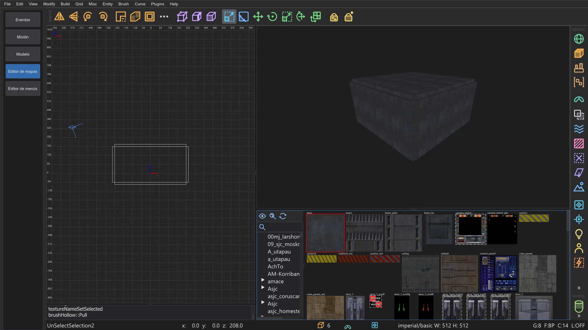
La sala hueca: seis brushes de pared. - 8
Una luz. Haz clic derecho dentro de la sala en la vista 2D: se abre el menú de entidades. light pide la intensidad (300 es un buen comienzo); OK la coloca donde pulsaste.
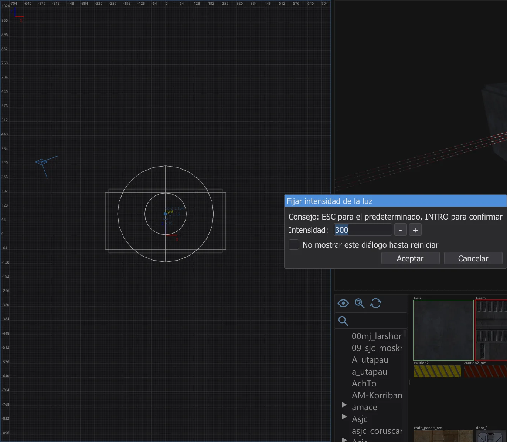
Fijar intensidad de la luz. - 9
Dónde empieza el jugador. Haz clic derecho cerca del suelo: info > info_player_start. Sin él, el juego no sabe dónde poner al jugador. Su caja está sobre el suelo.
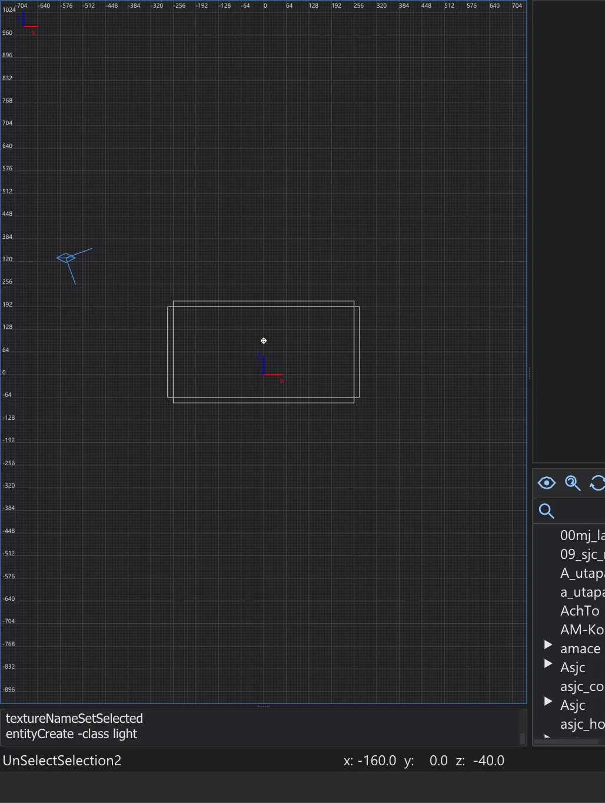
El menú de entidades, submenú info. - 10
Guarda. File > Save as, por ejemplo
mimapa.mapen una carpetamapspropia, fuera de las carpetas del juego. El nombre del archivo pasa a ser el nombre del mapa en el juego.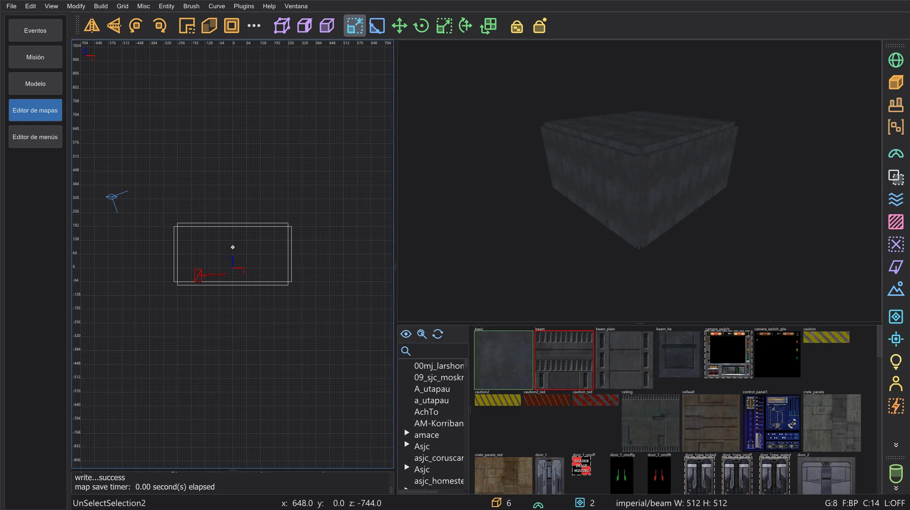
La sala guardada en el editor. - 11
Pon caulk por fuera. Las caras que nadie puede ver siguen costando espacio de lightmap y tiempo de dibujo. Vuela con la cámara dentro de la sala, arrastra un rectángulo alrededor de toda la sala con Mayús + botón derecho en la vista superior y pulsa F4 (Brush > AutoCaulk Selected): cada cara que no se puede ver desde dentro pasa a ser caulk. Construir con caulk desde el principio también funciona: da a los brushes nuevos la textura caulk y texturiza solo las caras que ves.
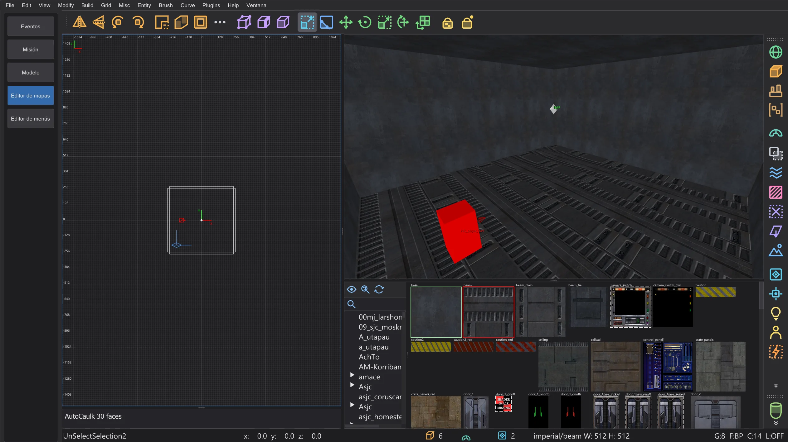
Tras AutoCaulk: la cámara dentro de la sala. - 12
Compruébalo. Build > Optimizador cuenta los límites del juego y busca problemas de compilación antes de compilar. Una sala en verde no tiene nada que corregir.
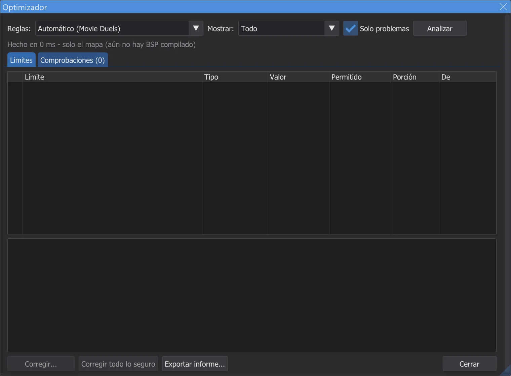
El optimizador para la sala del tutorial. - 13
Compila. Build > [Final] Fast ejecuta q3map2 tres veces: BSP, VIS y la luz con rebote. La ventana de progreso muestra la etapa, el progreso y el tiempo restante. Si el mapa tiene una fuga, la consola lo dice en rojo y una línea en la vista 2D muestra la salida; mira Editor de mapas: compilar el mapa.
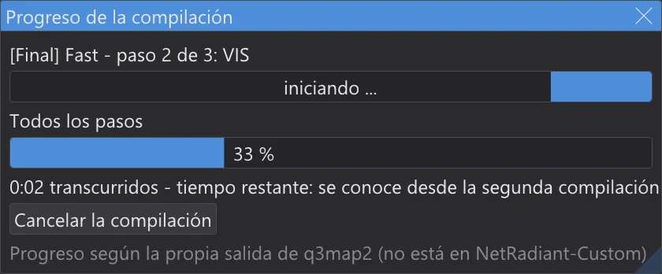
La ventana de progreso durante la compilación. - 14
Recórrela. View > Jugar: empezar en info_player_start y luego Jugar en el editor (F6): estás en el info_player_start y caminas con W A S D, saltas con Espacio; Esc termina. Funciona incluso sin compilar: la colisión sale directamente de los brushes (mira Jugar en el editor).

Recorriendo la sala en el editor. - 15
Al juego. Build > Empaquetar el mapa como .pk3 empaqueta
maps/mimapa.bspenmimapa.pk3junto al .bsp. El programa nunca escribe en las carpetas del juego: copia tú mismo el .pk3 enGameData/base(Jedi Academy, Jedi Outcast) o en la carpeta de tu mod (por ejemplo Movie Duels). Inicia el juego, abre la consola con Mayús+~ y escribedevmap mimapa.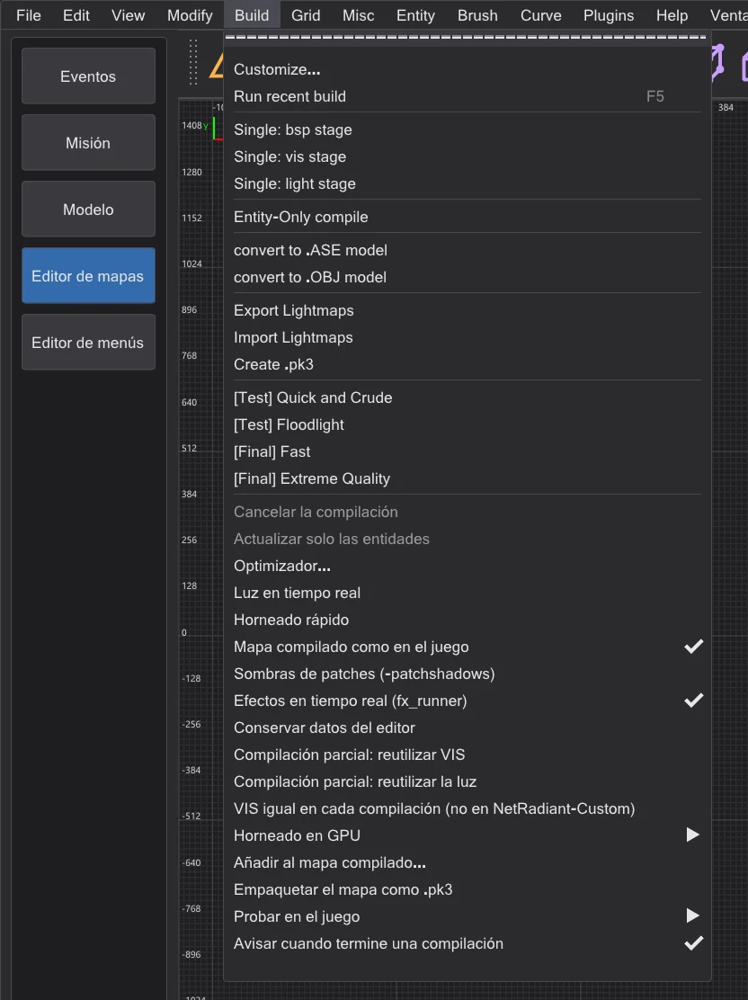
Build con Empaquetar el mapa como .pk3 (no está en NetRadiant-Custom).


Por dónde seguir#
- Brushes, clipper, patches y las herramientas CSG: Editor de mapas: herramientas de construcción.
- Menú de compilación, fugas, portales y la carpeta de compilación: Editor de mapas: compilar el mapa; recompilaciones más rápidas: Editor de mapas: progreso de la compilación y compilaciones parciales.
- Límites del juego y correcciones: Editor de mapas: optimizador y límites; la vista previa de la luz en la cámara: Editor de mapas: velocidad y luz en tiempo real.
- Terreno, vista lógica, modo espejo y jugar en el editor: Editor de mapas: terreno, jugar, lógica, espejo y más.
- Una cinemática en tu mapa: Tu propia misión: despegue en Taspir.